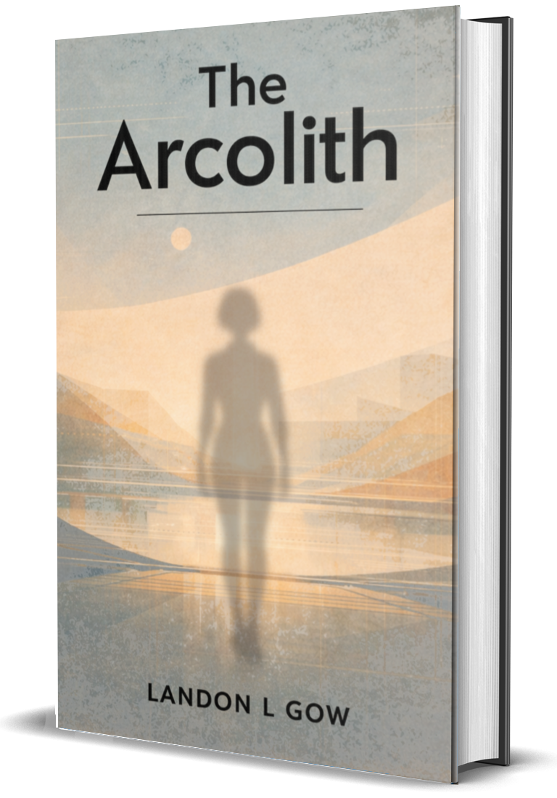

WHAT IF A SOCIETY COULD ELIMINATE SUFFERING BY REMOVING THE ABILITY TO EXPERIENCE IT?
What would it build? What would it cost? What happens when it fails?
In a controlled system where behavior is regulated at the biological level, one worker begins to encounter failures that cannot be explained or contained. Told in two voices, one intimate, one institutional, this is a story about compliance written into the body and the feeling that eventually breaks through.
Connection is the breach.
The Arcolith Trilogy is a science fiction series about a civilization that solved suffering by redesigning the human condition, and the fracture that begins when that design starts to fail. Told across multiple perspectives, it follows the tension between control and emergence, between what is engineered and what cannot be contained.
A planned three-part work. One continuous arc. Book II currently in development.
As the structure begins to show strain, the question is no longer whether it can be maintained, but what remains when it is no longer believed.